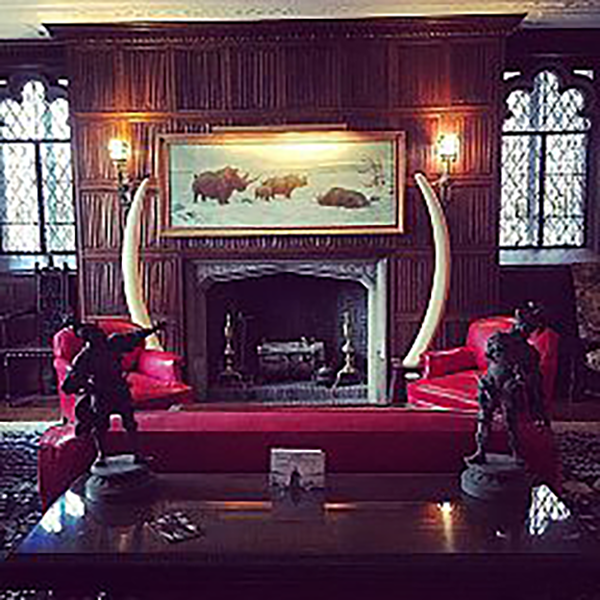
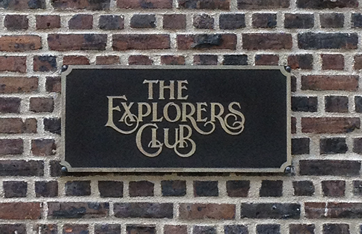

An early Explorers Club dinner invitation. (New York Public Library Digital Collections)
By Dan Rosen
The Explorers Club was founded in 1904 at the urging of journalist and explorer Henry Collins Walsh. Born in Italy and educated in the U.S., Walsh had an appreciation for adventure. In the 1890s, he joined an expedition to reach the North Pole and wrote a book about the trip, The Last Cruise of Miranda. He started the club, with a host of like-minded souls, to celebrate such scientific exploration.
Its first home, on West 67 Street, was described at the time as far from luxurious: fitting for “men of energy,” The New York Times wrote in 1905, “to whom indolent luxuries are unknown.” Its first guests heard an ornithologist speak on his studies of flamingos and an avid climber talk about the Canadian Alps. “Doubtless the membership privilege of inviting guests at these impromptu meetings will be eagerly sought,” The Times predicted, “for the genuine explorer is a timid lion, difficult to corral.”
Inside the Explorers Club. (Christopher Michel/Wikimedia Commons)
Among the club’s first honorees were two men closely linked—Roald Amundsen, a Norwegian explorer, and Robert Falcon Scott, a British Royal Navy officer. Between 1910 and 1912, they famously raced each other to be the first to the South Pole.
Amundsen won. In mid-January 1912, Scott and his team trudged toward the pole only to discover the Norwegian’s flags already planted in the ice. The shock hit them hard and they still faced the trip back. “I wonder if we can do it,” Scott wrote. They weren’t able. Driving snows, frigid temperatures and failing health forced their progress to a halt in late March. Their bodies were found in the spring, a dozen miles from supplies they had stashed in the snow on the way out. For his accomplishments, Amundsen was honored worldwide upon his return, including at a dinner at the Explorers Club in January 1913.
Plaque at 46 East 70 Street. (Photo by Dan Rosen)
The club has continued to expand its rolls. Women, like the legendary zoologist Dian Fossey, famous for her studies of gorillas in Africa, were welcomed in the early 1980s. After a number of moves, the club itself settled in 1965 into its current home on the East Side. There, relics of members’ triumphs abound, producing, as the author George Plimpton described it, an “atmosphere conducive to throat-clearing and the start of a tale of adventure.”
Connecting to Device
Device is Ready